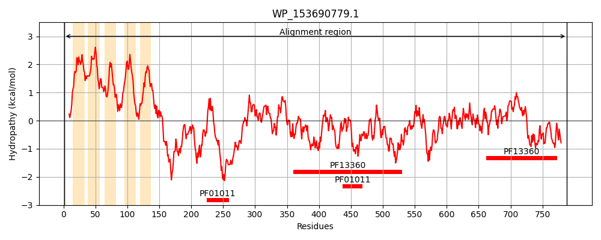
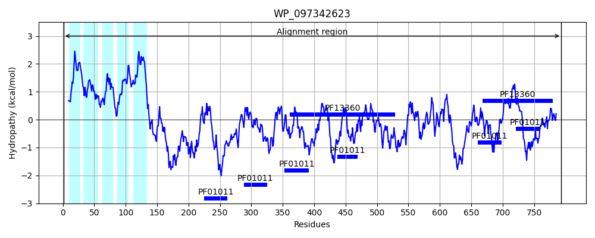
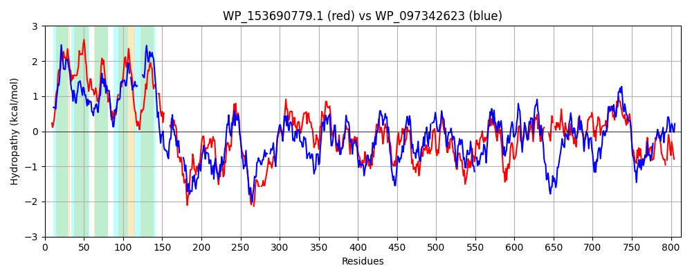

Hit Accession: WP_097342623
Hit TCID: 9.B.306.4.2
Hit Description: gnl|BL_ORD_ID|21651 gnl|TC-DB|WP_097342623.1|9.B.306.4.2 pyrroloquinoline quinone-dependent dehydrogenase [Escherichia coli]
Mach Len: 813
e:0.000000
Query TMS Count : 5
Hit TMS Count: 5
TMS-Overlap Score: 3.950000
Predicted Substrates:None
BLAST Alignment:
Score: 1646 , Bit scores: 638 bits, E-value: 0.0e+00, Alignment length: 813, Percentage identity: 42
Query: 1 MATGNAPRGFPRILQWLLAGLMLIIGLAMGILGAKLALVGGTLYFALMGVVMVIAAVLIFRNRRGGILLYAVAFIASVIWAISDAGWSYWPLFSR---LFALGVLAFLAALVWPFFATPPAKKGPAYGVAAVLAVALAVSFG---WMFKSEPL-------VSATEAVPVKPVAPGEQQKNWAHWGNTTHGDRFAALDQINKQNVNQLQVAWVAHTGDIPQSNGSGA-EDQNTPLQIGDTLYVCTPYSKVLALDVDSGKEKWGYDSK-SSSPNWQR--CRGLGYYEDSQAQTAPASGTQPAACSRRLFLPTIDARLIAIDADTGKLCESFGDGGIVDLSVGMGEVKAGYYQQTSTPLVAGNVVVVGGRVADNYSTGEPPGVVRAFDVHTGKLAWAWDPGNPALTGVPPEGQTYTRGTPNVWSAMSYDAKLNLIYLPTGNATPDFFGGERTALDDKYSSSIVAVDATTGQVRWHFQTTHHDLWDFDLPSQPLLYDLPDGKGGTTPVLVQTSKQGMIFMLNRETGEPVAKVEERPVPAGNVKGERYSPTQPYSVGMPMIGNQTLTESDMWGATPIDLLLCRIQFKEMRHQGVFTPPGEDRSLQFPGSLGGMNWGSVSVDPNNSLMFVNDMRLGLANYMVPRA-----KVAKDA--SGIEMGIVPMEGTPFGAMRERFLSPLGIPCQKPPFGTMSAVDLKTGKLVWQVPVGTVEDTGPLGIRMHMPIPIGMPTLGASLSTQSGLLFFAGTQDFYLRAFDTANGKEIWKSRLPVGSQSGPMTYVSPKTGKQYIIINAGG-ARQSPDRGDYIIAYALPD 788
MA N G R+L L A + GL + I G L +GG+ Y+ + G+VM+ A +++R++R + LYA + ++IW + + G+ +W L R L G+ L VW P A G A L VAL +S G W ++P +AT A + PVA ++W +G G RF+ L QIN NV+ L+ AWV TGD+ Q N G ++ TP+++GDTLY+CT + ++ ALD SGKEKW YD + ++ ++Q CRG+ Y+E A+ AS A C RR+ LP D RLIAI+A+ GKLCE+F + G+++L M + K G Y+ TS P++ +V+ G V DN+ST E GV+R FDV+TG+L WA+DPG +P + T+T +PN W+ +YDAKL+L+YLP G TPD +GG RT ++Y+SSI+A++ATTG++ W +QT HHDLWD DLP+QP L D+ G PV+ +K G IF+L+R GE V E+PVP G KG+ +PTQP+S + + L+ +DMWGAT D L+CR+ F ++R++G+FTPP E +L FPG+LG WG +SVDPN + N M L + ++PR + KDA +G E GI P G P+G +LSP G+PC++P +G +SA+DLKT ++VW+ +GT +D+ P + + +P +GMP LG +ST +LF A T D YLRA++ +NG+++W+ RLP G Q+ PMTY GKQY++I+AGG GDYI+AYALPD
Sbjct: 1 MAINNT--GSRRLLVTLTALFAALCGLYLLIGGGWLVAIGGSWYYPIAGLVMLGVAWMLWRSKRAALWLYAALLLGTMIWGVWEVGFDFWALTPRSDILVFFGIWLILP-FVWRRLVIP------ASGAVAALVVALLISGGILTWAGFNDPQEINGTLSANATPAEAISPVA----DQDWPAYGRNQEGQRFSPLKQINADNVHNLKEAWVFRTGDVKQPNDPGEITNEVTPIKVGDTLYLCTAHQRLFALDAASGKEKWHYDPELKTNESFQHVTCRGVSYHE---AKAETASPEVMADCPRRIILPVNDGRLIAINAENGKLCETFANKGVLNLQSNMPDTKPGLYEPTSPPIITDKTIVMAGSVTDNFSTRETSGVIRGFDVNTGELLWAFDPGAKDPNAIPSDEHTFTFNSPNSWAPAAYDAKLDLVYLPMGVTTPDIWGGNRTPEQERYASSILALNATTGKLAWSYQTVHHDLWDMDLPAQPTLADI-TVNGQKVPVIYAPAKTGNIFVLDRRNGELVVPAPEKPVPQGAAKGDYVTPTQPFS-ELSFRPKKDLSGADMWGATMFDQLVCRVMFHQLRYEGIFTPPSEQGTLVFPGNLGMFEWGGISVDPNREVAIANPMALPFVSKLIPRGPGNPMEQPKDAKGTGTESGIQPQYGVPYGVTLNPYLSPFGLPCKQPAWGYISALDLKTNEVVWKKRIGTPQDSMPFPMPVPVPFNMGMPMLGGPISTAGNVLFIAATADNYLRAYNMSNGEKLWQGRLPAGGQATPMTY--EVNGKQYVVISAGGHGSFGTKMGDYIVAYALPD 793 | Protein Hydropathy Plots: |
|---|
|  |  |
Pairwise Alignment-Hydropathy Plot:
|
|---|
|  |